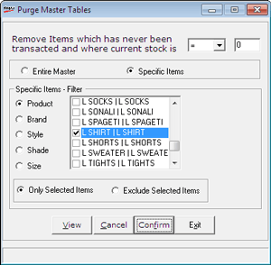

Use this option if database contains master records of non transacted items and you want to reduce the size of the database by removing such records from the item master. The purge will affect only those records which have stock less than that specified as a cut-off. Usage of purge helps in reducing the time taken for all Shoper transactions.
How to reach: Housekeeping > Purge Data
The Login window is displayed to confirm the supervisor's login ID and password.
User ID: Enter supervisor’s login ID (Default is super).
Password: Enter supervisor’s password (Default is nothing).
The Purge Master Tables window is displayed as shown where you can set the criteria for purging the data.

The purging of the records pertaining to any item depends on two basic conditions namely transactions done and current stock of the item.
Select the current stock criteria from the drop down box, i.e., current stock is < [Less Than], <= [Less Than Or Equal To] and = [Equal To]. Enter the value in the next box.
Apply the selected criteria on Entire Master or Specific Items.
Entire Master: Click this option to apply the above purging condition on all the items in the master.
Specific Items: To apply the above purging condition selectively on items matching the selections made with respect to five item classifications namely Class1 (Product), Class2 (Brand), SubClass1 (Style), SubClass2 (Shade) and SizePackUOM (Size).
Specific Items – Filter: This is enabled when Specific Items is selected. Select any or all the values displayed on selecting any of the five item classifications.
Only Selected Items: Apply the basic conditions of purging only on the items selected.
Exclude Selected Items: Apply the basic conditions of purging only on the items excluding the ones selected.